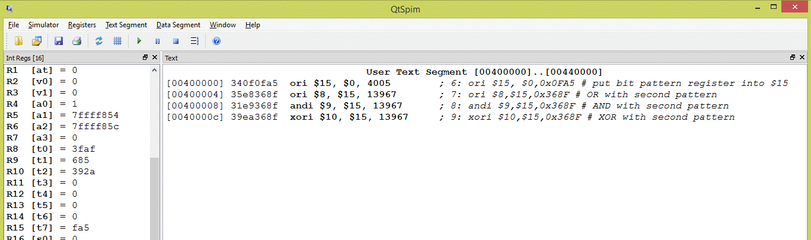

0000 1111 1010 0101 0FA5 0011 0110 1000 1111 368F 0011 1001 0010 1010 392A
Here is a program that does all three bitwise operations between the same two patterns. The destination register is different in each case.
## Program to bitwise OR, AND, and XOR two patterns
.text
.globl main
main:
ori $15, $0,0x0FA5 # put bit pattern register into $15
ori $8,$15,0x368F # OR with second pattern
andi $9,$15,0x368F # AND with second pattern
xori $10,$15,0x368F # XOR with second pattern
## End of file
Running it in SPIM (pushing F10 four times) results in the following:

The register display on the left shows the results of the three logic operations.
Select "Hex" from the "Registers" menu to see register content displayed using hexadecimal pattern names.
The registers always hold 32 bits (of course),
but the register display does not show leading zeros.
So the result of the xori operation given in the answer (see above) is displayed as
392a
corresponding to what is really in the register
0000392a hexadecimal for 0000 0000 0000 0000 0011 1001 0010 1010
What is the exclusive-OR of a bit pattern with itself? Try this with a few bit patterns written on a scrap of paper.